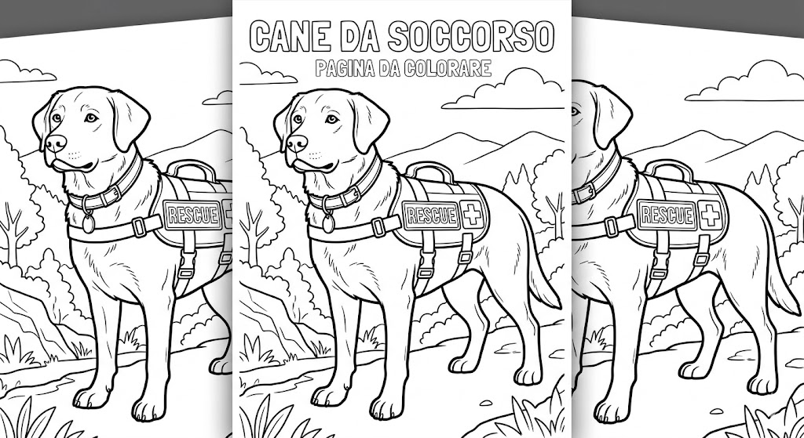

Protezione CivileGruppo Comunale Volontari — Genzano di Roma
Bambini · 3-5 anni
Color by number: il cane da soccorso
3-5 anni🐕 Colora seguendo i numeri il cane da soccorso e il suo conduttore.

I cani da soccorso aiutano i volontari a cercare persone disperse.